Question. Suppose an experiment can observe physical structure only up to a length \(R\). Should we expect related structure at lengths larger than \(R\)? This note separates two ways to answer. A probability model can assign a chance to larger scales. A fluid equation can explain how energy reaches them. Neither approach allows a finite observation, by itself, to prove continuation to arbitrarily large scales.
Running example. To keep the discussion concrete, consider a two-dimensional flow forced at length \(L_f=1\,\mathrm m\). The forcing supplies energy at rate \(\varepsilon=10^{-3}\,\mathrm{m^2\,s^{-3}}\), and our experiment can detect coherent structures only up to \(R=8\,\mathrm m\). We will ask what, if anything, can be said about structures larger than \(8\,\mathrm m\).
1. A probability law for further scales
Scales as a point process (Fig. 1)
Suppose that every structure we care about, such as an eddy, wave, or instability, has a characteristic length \(L\). We record only that length. The collection of structures is then represented by a random set of points on the positive \(L\)-axis, starting at a chosen minimum length \(L_{\min}\).
Here \(L>0\) is physical length and \(L_{\min}>0\) is the lower cutoff of the modeled scale range.
It is natural to measure this axis logarithmically: going from 1 to 2 metres is the same relative change as going from 100 to 200 metres. We now make a specific modeling assumption. Counts in nonoverlapping scale intervals are independent, and the expected number in a short interval near \(L\) is
These two statements define a Poisson point process. The function \(\eta(L)\) is the expected density of structures per unit of log scale. A structure is “relevant” only if it interacts with the phenomenon being studied. If one instead measures relative \(d\)-dimensional volume, the extra factor \(d\) can be absorbed into \(\eta\) and does not change the argument.
Equivalently, \(d\mu(L)\) is the infinitesimal expected count, while \(dL/L=d(\log L)\) is an infinitesimal log-scale interval. This intensity-measure description is standard for Poisson processes; see Kingman [4].
The number \(N(R,S)\) of processes with scales in \((R,S]\) is Poisson with mean
The chance of seeing at least one such structure is therefore
Here \(\Prob\) denotes probability under the specified point-process model.
Now let the upper limit \(S\) grow without bound. The model gives the exact test
Here “almost surely” means with probability one under the model.
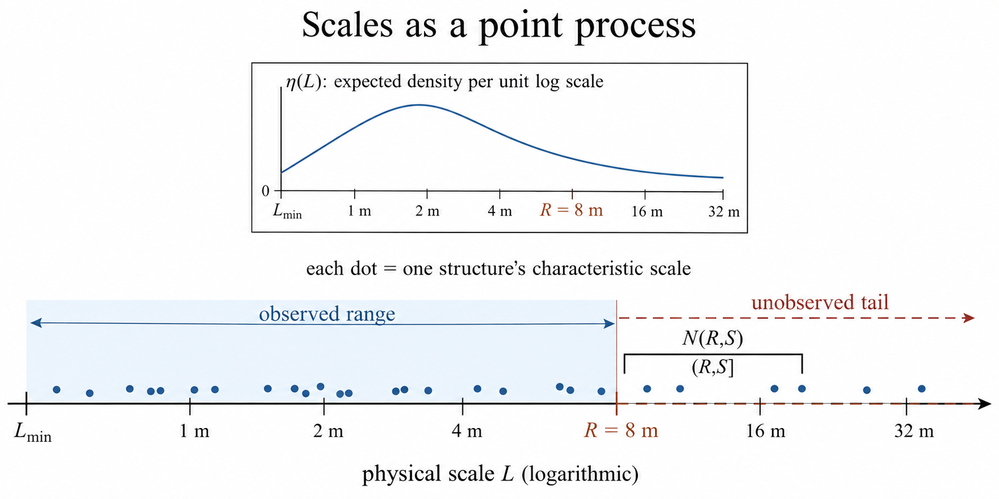
Coin-flip intuition (Fig. 2)
First suppose \(\eta(L)=\eta_0>0\) at every scale. Each doubling interval \((2^jR,2^{j+1}R]\) has the same hit probability
Here \(j=0,1,2,\ldots\) indexes successive doubling intervals, \(\log\) is the natural logarithm, and \(p\) is the probability that one interval contains at least one point.
The intervals are independent, so the probability of missing the first \(m\) is \(2^{-m\eta_0}\to0\). This is like repeating a coin toss with a fixed positive chance of heads: eventually a head appears, and in fact heads appear infinitely often. Likewise, structures occur in infinitely many doubling intervals with probability one. Arratia calls this a scale-invariant Poisson process [1].
In the running example, take \(\eta_0=1\). Each interval \((8,16],(16,32],(32,64]\), and \((64,128]\) metres then has probability \(1/2\) of containing a relevant structure. The probability of finding at least one by \(128\,\mathrm m\) is
If the same constant intensity continues through infinitely many doubling intervals, structures occur at arbitrarily large scales with probability one.
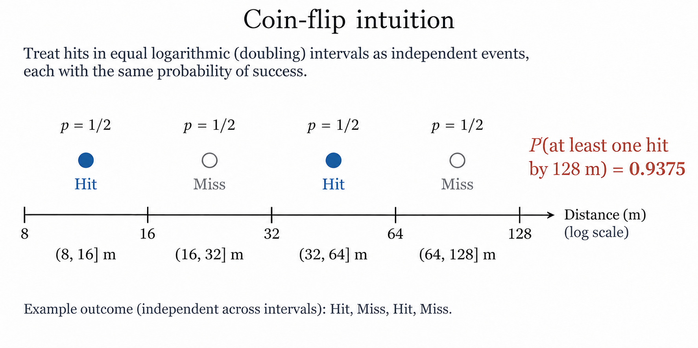
A decaying tail (Fig. 3)
The answer changes if large structures become sufficiently rare. For example, if \(\eta(L)=\eta_0(L_{\min}/L)^a\) with \(\eta_0>0\) and \(a>0\), then
then the total expected number beyond \(R\) is finite. The probability that no relevant structure exists beyond \(R\) is therefore
For a numerical contrast, define two models that agree throughout the observed range:
Model \(A\) predicts unbounded scales almost surely. For model \(B\),
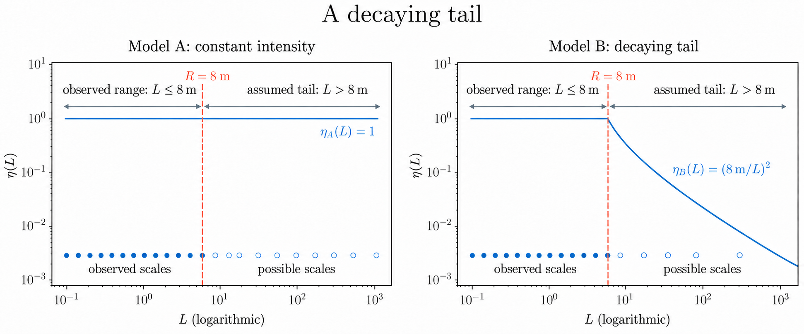
Why finite data cannot decide (Fig. 4)
Models \(A\) and \(B\) fit every possible observation made at \(L\le8\,\mathrm m\), yet they give opposite answers about unlimited continuation. The answer is determined by the assumed tail of \(\eta\), which the finite experiment cannot see.
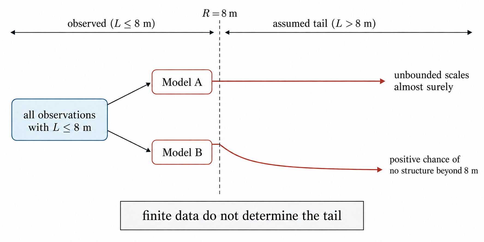
2. What Navier–Stokes can supply
The Poisson model describes how many scales occur, but it does not explain what creates them. Two-dimensional fluid flow provides a possible mechanism: an inverse cascade can carry energy from the forcing scale toward larger lengths. The special role of the two-dimensional energy and enstrophy constraints, where enstrophy is the mean-square vorticity, was made explicit by Fjørtoft [5]; inverse-cascade behavior was later observed directly in thin-layer experiments by Paret and Tabeling [6]. Consider the randomly forced, damped Navier–Stokes equations on a periodic square \(\mathbb T_\lambda^2\) of size \(\lambda\):
Here \(u\) is velocity, \(p\) is pressure, \(\nu\) is viscosity, \(\alpha\) is large-scale drag, and \(W^\lambda\) is the random forcing. The forcing injects mean energy \(\varepsilon>0\) per unit time and area near one fixed length.
More explicitly, \(x\in\mathbb T_\lambda^2=(\mathbb R/\lambda\mathbb Z)^2\) is position, \(t\) is time, \(\nabla\) and \(\Delta\) are the spatial gradient and Laplacian, \(\gamma\ge0\) controls the scale dependence of the drag, and \(dW^\lambda\) is the stochastic forcing increment. The constraint \(\nabla\!\cdot u=0\) expresses incompressibility.
The inverse-flux law (Fig. 5)
Bedrossian, Coti Zelati, Punshon-Smith, and Weber proved an inverse-flux law for stationary solutions as the box grows and viscosity and drag vanish [2]. Among their assumptions are
where \(\omega=\operatorname{curl}u\) is vorticity. The powers \(-2\gamma\) and \(-\gamma\) are consistent: a quadratic energy norm splits the operator equally between its two factors, as in Ref. [2].
Here \(\E\) is expectation with respect to the stationary ensemble, \(\|\cdot\|_2\) is the spatial \(L^2\) norm on the periodic square, and the arrows refer to the joint large-box, vanishing-viscosity, and vanishing-drag limit.
Here stationary means that the probability distribution of the flow does not change with time.
To measure transfer across a length \(\ell\), compare velocities at two points separated by \(\ell\) in direction \(n\): \(\delta_{\ell n}u(x)=u(x+\ell n)-u(x)\). Average the resulting cubic quantity over all positions \(x\) and directions \(n\):
Here \(S^1\) is the unit circle of directions, \(n\in S^1\) is a unit vector, and each barred integral \(\avgint\) denotes a normalized spatial or directional average rather than an unnormalized integral.
The theorem gives an upper inertial-range length \(\ell_\alpha\to\infty\) for which
The symbol \(\sim\) means that the ratio of the two sides tends to one in the stated parameter limit, while \(\ll\) denotes separation of scales within the inertial range.
The positive sign says that energy is moving toward larger lengths. Thus, for any chosen finite \(R\), one can take a large enough box and weak enough drag to obtain active inverse transfer at some \(\ell\ge R\). Notice the quantifiers: the system may change when \(R\) changes. This does not yet describe one flow whose active scale grows forever.
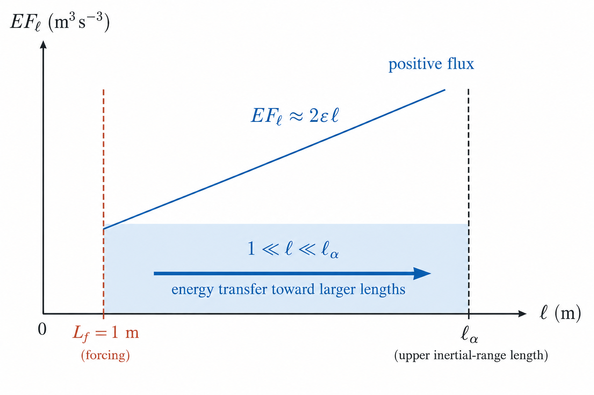
Numerical flux at 8 metres (Fig. 6)
For the running example, suppose \(8\,\mathrm m\) lies inside the inertial range. Equation (5) then gives
This positive number says that energy is crossing the \(8\,\mathrm m\) scale in the direction of still larger structures. It supplies a physical mechanism for continuation beyond the measurement limit. It does not prove that the scale of one particular flow grows without bound.
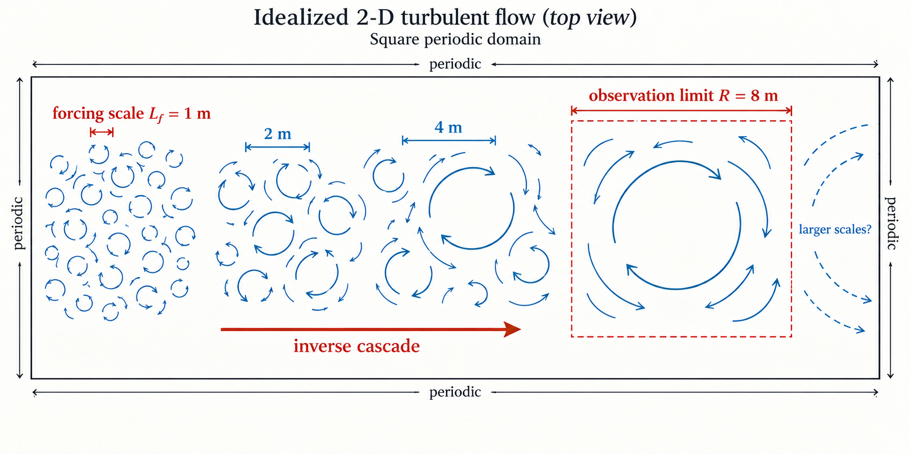
The role of ergodicity (Fig. 7)
There is also an almost-sure statement at each fixed set of parameters. If the chosen stationary measure is ergodic, Birkhoff’s theorem gives
This is the pointwise ergodic theorem introduced by Birkhoff [7]; \(T\) is the averaging time and the displayed convergence is taken as \(T\to\infty\).
So the long-time average flux is positive for almost every realization. This is a stationary result for an allowed scale in a fixed box. It does not remove the box’s largest possible length.
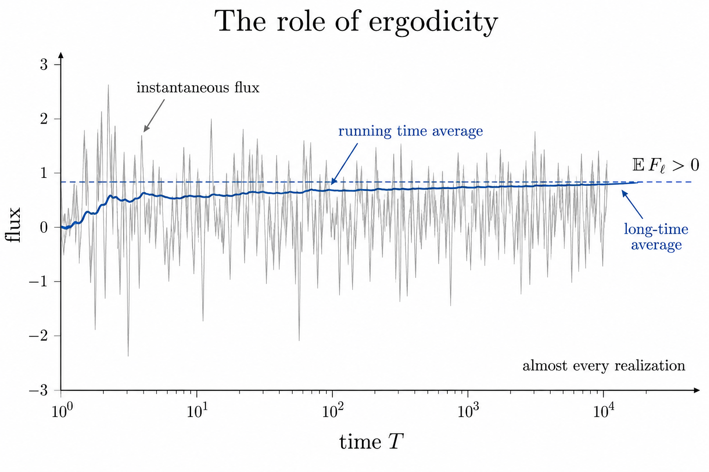
3. The stronger theorem still wanted
The stronger goal concerns one flow on the whole plane \(\mathbb R^2\). A spatially homogeneous flow on an infinite plane generally has infinite total energy, so the right object is a homogeneous statistical solution with finite energy per unit area, not a finite-energy \(L^2(\mathbb R^2)\) solution.
Defining the large scale (Fig. 8)
We must also define what the flow’s “large scale” means. Let \(E(k,t)\) be its energy spectrum, where small wave number \(k\) means large physical length. Fix a fraction \(\theta\in(0,1)\) and define
Here \(k\ge0\) is scalar wave number, with dimensions of inverse length, and \(E(k,t)\,dk\) is the energy per unit area in the wave-number band \([k,k+dk]\). Thus \(\int_0^\infty E(k,t)\,dk\) is the total energy per unit area.
The infimum in the definition selects the smallest threshold \(K\) containing at least the fraction \(\theta\) of that energy.
Thus \(k_\theta(t)\) is the wave number below which the chosen fraction of energy lies, and \(L(t)=1/k_\theta(t)\) is its associated length. Energy moving toward smaller \(k\) makes \(L(t)\) larger. The desired theorem is
The probability in (7) is taken over realizations of the proposed homogeneous statistical solution on \(\mathbb R^2\).
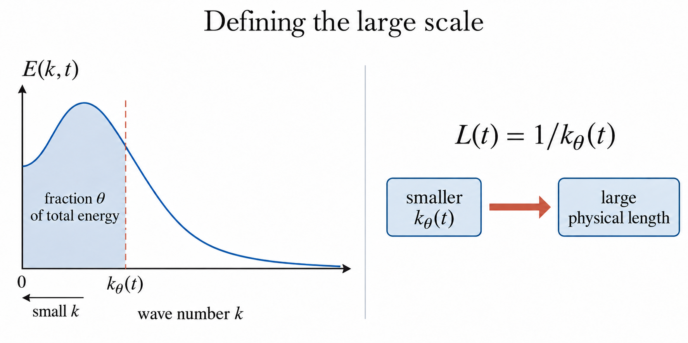
A conditional growth law (Fig. 9)
What growth rate might we expect? If we additionally assume Kraichnan’s inverse-cascade spectrum [3], with forcing length \(L_f\),
\(C_I>0\) is the dimensionless inverse-cascade spectral constant; the bounds on \(k\) specify the range from the evolving large scale to the fixed forcing scale.
then the energy accumulated by time \(t\) is approximately the integral of this spectrum. Setting that integral equal to \(\varepsilon t\) gives
so
In the last relation, \(\sim\) describes the large-\(t\) asymptotic law.
For a simple numerical illustration, set \(C_I=1\). This choice makes the arithmetic transparent; it is not an empirical calibration. Using the values from the running example, (8) becomes
The predicted scale reaches the observation limit after 45 seconds,
and reaches \(27\,\mathrm m\) after 120 seconds. These numbers illustrate what the \(t^{3/2}\) law says; they are conditional on the assumed spectrum.
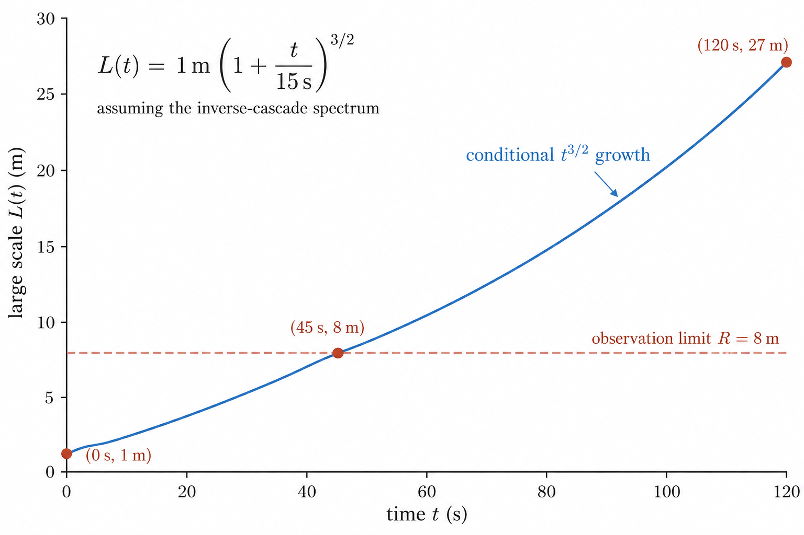
An exploratory computational check (Fig. 10)
We tested the mechanism and the conditional law in a finite periodic pseudospectral model of the vorticity equation. A run begins with a random vorticity field concentrated in a narrow shell around the forcing wave number \(k_f\). At every time step the Navier–Stokes nonlinearity redistributes energy among Fourier modes, small-scale hyperviscosity removes energy near the numerical cutoff, and an independent random shell increment injects exactly \(\varepsilon\,dt\) of energy. The solver uses two-thirds dealiasing, a skew-symmetric nonlinear term, and integrating-factor Runge–Kutta time stepping.
For a Fourier vorticity coefficient \(\widehat\omega_{\mathbf k}\) on an \(N\times N\) grid, the modal kinetic energy and the measured energy-weighted length are
Thus \(L_E\) grows when the spectral energy distribution moves toward smaller wave numbers. To distinguish genuine nonlinear transport from direct forcing, we also compute the cumulative nonlinear transfer
where \(\widehat{\mathcal N}\) is the nonlinear vorticity tendency with forcing and dissipation excluded. Positive \(\Pi_{\le K}\) means that nonlinear interactions are giving energy to modes at or below \(K\), hence to structures at or above the corresponding physical length. One trajectory is therefore a time series of the full simulated field, reduced for analysis to quantities such as \(L_E(t)\), \(\Pi_{\le K}(t)\), energy, enstrophy, and the radial spectrum.
The first experiment used sixteen \(256^2\) trajectories: four injection rates, with four random seeds at each rate, forced near \(k_f=24\) for fifteen nondimensional time units. Every trajectory showed positive late transfer into modes below \(k_f/2\), while \(L_E\) grew by factors between \(3.4\) and \(4.2\). This establishes the qualitative behavior within the simulation: the nonlinearity moved injected energy toward larger structures.
We then treated the smoothed growth rate \(dL_E/dt\) as a regression target. The inputs were the injection rate, current length, measured flux, infrared energy fraction, spectral width, and enstrophy. Models were trained after excluding startup and endpoint samples, then evaluated by leaving out either one complete trajectory or one complete injection rate. Leaving out complete groups is important: a random train–test split would leak strongly correlated time samples from the same trajectory into both sets. On injection rates omitted from fitting, the constrained law \(dL_E/dt=C\varepsilon^{1/3}L_E^{1/3}\) had root-mean-square log-error \(0.389\), equivalent to a typical multiplicative error of \(1.48\). A descriptive two-variable law based on measured flux and current length reduced the error to \(0.183\), or a factor of \(1.20\); adding all available features produced essentially no further improvement. This is model comparison, not evidence that the fitted alternative is universal. The machine-readable ensemble results include all holdouts and conservation checks.
The second experiment asked why the conditional law failed. It held \(k_f=16\), \(\varepsilon=0.004\), and the duration at \(2.5\) while comparing two seeds at \(256^2\) and \(512^2\). This isolates whether added small-scale resolution alone reveals the spectrum assumed in (8). Over the late-time band \(2\le k\le12\), the mean fitted spectral slopes were \(+0.92\) and \(+1.14\), respectively, rather than \(-5/3\). The characteristic length increased by only about \(14\%\), and \(\Pi_{\le K}\) was positive on average but not flat in \(K\). Doubling the resolution therefore did not produce a mature constant-flux inverse range during this short transient. The maximum relative energy-balance and injection errors were \(6.4\times10^{-11}\) and \(1.2\times10^{-13}\); the focused results contain both seeds and every recorded spectrum.
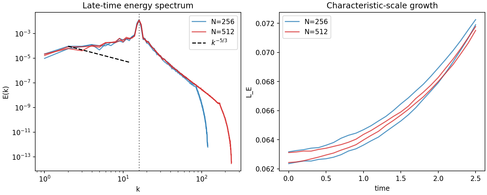
The positive slopes have a simple geometric interpretation. Let \(E_N(K)\) be the plotted energy summed over the unit-width lattice shell centered at \(K\), let \(n_N(K)\) be the number of Fourier modes in that shell, and let \(q_N(K)=E_N(K)/n_N(K)\) be its average energy per mode. In two dimensions,
If the low-wave-number modes have approximately equal energy, \(q_N(K)\approx q_0\), then \(E_N(K)\approx2\pi q_0K\): the shell spectrum has slope \(+1\). More generally,
Dividing by the actual lattice-mode counts gives the measured comparison
The small difference between \(p-1\) and the displayed per-mode exponent comes from using the exact discrete shell counts rather than the continuum approximation \(2\pi K\). Both per-mode exponents are close to zero, as predicted by approximately equal energy per mode. In contrast, the inverse-cascade law \(E(K)\propto K^{-5/3}\) would require
which concentrates far more energy in the lowest modes. The observed state is therefore consistent with an equipartition-like, random-phase transient, not with the mature inverse-cascade spectrum required by (8). This diagnostic analogy does not assert equilibrium.
The numerical conclusion is deliberately limited but more specific than a failed curve fit. Positive inverse transfer can begin before a mature inverse-cascade spectrum appears, and increasing ultraviolet resolution does not by itself accelerate that spectral reorganization. These computations support the transport mechanism used in Section 2, but they neither confirm nor refute the \(t^{3/2}\) asymptotic law because its spectral premise was absent in the measured window.
What remains open (Fig. 11)
This calculation predicts \(L(t)\propto t^{3/2}\), where \(\propto\) means proportional up to a time-independent constant, but it is not a theorem derived from (3): it assumes the spectrum that produces the answer. The lower spectral edge used in the calculation is proportional to the quantile length above, up to a constant that does not change the exponent.
Finally, this growing state is not stationary, so the Birkhoff argument in (6) cannot prove (7) or (8). Drag, finite forcing time, or a container may stop the growth. The open problem is to prove from Navier–Stokes that the infrared scale—the large-length, small-wave-number end of the spectrum—of one unbounded flow grows almost surely, under explicit assumptions, without first assuming the \(k^{-5/3}\) law.
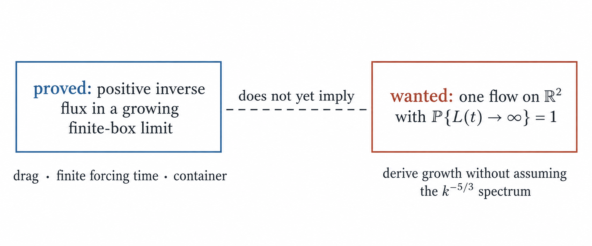
References
- R. Arratia, “On the Central Role of the Scale Invariant Poisson Processes on \((0,\infty)\),” DIMACS Series 41 (1998), arXiv:1611.05572.
- J. Bedrossian, M. Coti Zelati, S. Punshon-Smith, and F. Weber, “Sufficient Conditions for Dual Cascade Flux Laws in the Stochastic 2d Navier–Stokes Equations,” Arch. Ration. Mech. Anal. 237 (2020), 103–145.
- R. H. Kraichnan, “Inertial Ranges in Two-Dimensional Turbulence,” Phys. Fluids 10 (1967), 1417–1423.
- J. F. C. Kingman, Poisson Processes, Oxford Studies in Probability 3, Oxford University Press (1993), doi:10.1093/oso/9780198536932.001.0001.
- R. Fjørtoft, “On the Changes in the Spectral Distribution of Kinetic Energy for Twodimensional, Nondivergent Flow,” Tellus 5 (1953), 225–230.
- J. Paret and P. Tabeling, “Experimental Observation of the Two-Dimensional Inverse Energy Cascade,” Phys. Rev. Lett. 79 (1997), 4162–4165.
- G. D. Birkhoff, “Proof of the Ergodic Theorem,” Proc. Natl. Acad. Sci. USA 17 (1931), 656–660.